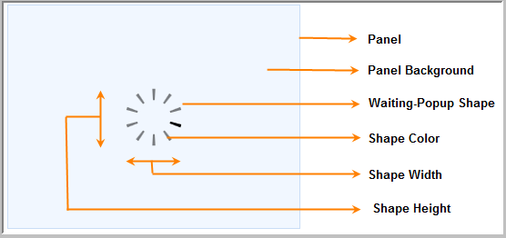

This control is the same as the Waiting Pop-up control of MVC tools, except that it is designed using the HTML5 Canvas element. Hence, images can’t be used in the Waiting Pop-up; the 4 in-built shapes are used instead.
This is a client-side control and so it can be loaded a lot quicker than the ordinary Waiting Pop-up.
The following figure gives you a basic idea of the structure and appearance of the Waiting Pop-up in HTML5:

Figure 340: Waiting Pop-up in HTML 5
Use Case Scenarios
You can load the control in lesser time because all processes are in the client-side.
You can customize the look and feel of the Waiting Pop-up in HTML5 using the 4 built-in shapes .
Where do I find Installed samples?
To view the samples:
1. Click Dashboard. The Essential Studio Enterprise Edition window is displayed.
2. Click the Run Locally Installed Samples link.
3. Select Tools from the drop-down.
4. Select the Waiting Pop-up tab and browse through the samples.
 Adding Waiting pop-up in HTML5 to an MVC
application
Adding Waiting pop-up in HTML5 to an MVC
application